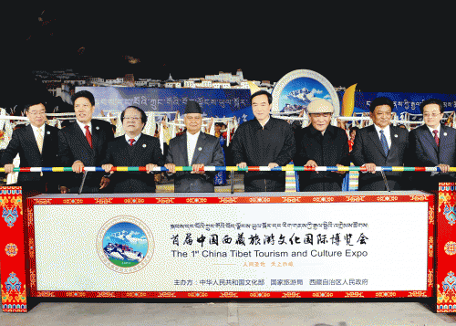

西藏日报

本网讯（记者 赵书彬 肖涛）人间圣地，天上西藏；雪域金秋，圣城欢歌。9月25日晚，拉萨次角林韵致凸显、华灯初上，霓虹闪闪、歌舞欢腾。来自国内外的各界宾朋欢聚一堂，共同庆祝首届中国西藏旅游文化国际博览会隆重开幕。
自治区党委书记陈全国宣布开幕；全国人大常委会副委员长向巴平措发来贺信；尼泊尔副总统帕玛纳德·贾阿，十届全国人大常委会副委员长热地应邀出席；文化部部长、首届藏博会组委会主任蔡武，区党委副书记、自治区主席、首届藏博会组委会主任洛桑江村，国家旅游局副局长、首届藏博会组委会副主任杜江致辞；区党委副书记、自治区人大常委会主任白玛赤林主持；自治区党委副书记、自治区常务副主席、区党委政法委书记、首届藏博会组委会副主任邓小刚，世界旅游组织亚太首席运营官马里奥·约瑟夫·麦克等出席。
洛桑江村在致辞中，代表西藏自治区党委、人大、政府、政协，代表全区各族人民，代表首届藏博会组委会，向莅临藏博会的各位嘉宾表示热烈欢迎，向长期以来关心支持西藏各项事业发展的各界人士表示衷心感谢。他说，高原巨变，举世瞩目。在中国共产党的领导下，西藏经历了和平解放、民主改革、自治区成立、社会主义建设和改革开放的伟大历史进程，60多年来，在中央的特殊关怀和全国人民的大力支援下，全区各族人民团结奋斗，创造了短短几十年跨越上千年的人间奇迹。今天的西藏，经济快速发展，社会和谐稳定，民族团结进步，宗教和睦和顺，人民生活持续改善，生态环境保持良好，各项事业蒸蒸日上，各族人民安居乐业，已经站在了新的历史起点上，处于历史上最好的时期之一。新的起点，新的征程。党的十八大以来，全区上下紧密团结在以习近平同志为总书记的党中央周围，紧紧围绕实现中华民族伟大复兴的中国梦，深入贯彻落实习近平总书记系列重要讲话精神、特别是“治国必治边、治边先稳藏”的重要战略思想，全面深化改革，创新社会治理，着力打基础、利长远、惠民生，全力推进跨越式发展和长治久安，正在与全国人民一道向着“两个一百年”的宏伟目标奋力迈进。
洛桑江村说，人间圣地，天上西藏。这片高天厚土，自然风光壮美瑰丽、异彩纷呈，养育了勤劳、勇敢、智慧、善良的西藏人民，孕育了包容开放、豁达乐观、崇尚和谐、悲悯向善的西藏文化。独特的自然资源和悠久的传统文化，是西藏各族人民的宝贵财富，是中华民族的璀璨明珠，散发无穷魅力，令世人无限神往。旅游为体，文化为魂。旅游赋予文化以生机和活力，文化决定旅游的内涵和品质。旅游文化的共生共进，是优化经济结构、转变发展方式的必然选择。要更加注重顶层设计，坚持文化为魂，坚持高端特色精品，坚持深度融合，坚持“三条底线”要求，打造西藏旅游文化升级版，推动大旅游大文化大产业大发展，加快建设重要的中华民族特色文化保护地、重要的世界旅游目的地。美的价值，在于共享。中国西藏旅游文化国际博览会，搭建了一个展示新西藏新形象、深化交流合作、实现互惠共赢的新平台。我们热忱欢迎国内外朋友到西藏观光旅游，投资兴业，合作发展。开放的西藏拥抱您，热情的西藏人民欢迎您。
蔡武在致辞中代表文化部向来自国内外的各界嘉宾表示热烈欢迎，向所有关心和支持西藏旅游文化发展的朋友们表示诚挚感谢。蔡武说，在西藏这片神奇美丽的土地上，有雄浑壮美的自然风光，有独具魅力的民俗风情，有包容开放的文化特质，有善良淳朴的各族人民。他们用勤劳和智慧共同创造了丰富灿烂的民族文化，积淀了深厚的历史文化底蕴，对中华文化的形成和发展作出了不可磨灭的贡献。
蔡武说，旅游和文化产业是拉动经济发展的重要动力，也是西藏最具资源优势、最具发展潜力的特色优势产业。以文化带动旅游、以旅游促进文化，既有经济效益又有社会效益，是优势互补、互惠共赢的事业。首届藏博会以“人间圣地、天上西藏”为主题，将充分展示“世界屋脊”独具魅力的自然景观和西藏优秀的民族传统文化，促进西藏文化产业和旅游产业融合发展，推动西藏世界旅游目的地和中华民族特色文化保护地建设。相信在文化部、国家旅游局和西藏自治区的共同努力下，中国西藏旅游文化国际博览会必将逐步成为具有国际影响力的旅游文化品牌。衷心预祝首届藏博会圆满成功，祝愿藏博会越办越精彩。
杜江在致辞中说，西藏是中国旅游的一颗璀璨明珠。西藏自治区党委、政府高度重视发展旅游业，近年来，出台了一系列支持旅游业发展的政策措施，不断做大做强做精旅游业，全区上下形成了重旅游、抓旅游、兴旅游的良好氛围。中国西藏旅游文化国际博览会的成功举办，为西藏独特的自然景观、民族风情、地域文化搭建了重要的展示平台，为西藏旅游线路和各要素产品搭建了重要的交易平台，为西藏旅游业界与兄弟省市区旅游业界乃至和全球旅游业界的合作搭建了重要的交流平台。同时，藏博会的举办对推动西藏旅游业加快开放步伐，推动西藏旅游与文化产业的融合发展，促进少数民族地区的经济社会发展与社会和谐稳定也将起到重要的作用。国家旅游局将一如既往地支持西藏旅游业发展，为西藏建设重要的世界旅游目的地贡献力量。
当晚8时15分，陈全国宣布：首届中国西藏旅游文化国际博览会开幕。陈全国、帕玛纳德·贾阿、热地、蔡武、白玛赤林、洛桑江村、杜江、邓小刚共同点亮首届藏博会会徽，正式启动首届中国西藏旅游文化国际博览会。
随后，以《吉祥西藏》、《圆梦西藏》、《鼓舞西藏》三个篇章组成的群众性展演在具有浓郁地方特色的藏戏表演中拉开帷幕。古朴高亢雄浑的唱腔，独具原生态神韵的音乐，沉雄奇崛、瑰丽多姿、精彩绝伦；藏族舞蹈动韵律操与台下上千名观众激情互动、整齐如一，展现了当代西藏欣欣向荣的新气象，令人赏心悦目；热巴、卓舞、阿羌神韵无限，悠扬而神奇，粗犷豪放、气势宏大，表现了西藏各族人民良好的精神风貌；《文成公主》大型实景剧更是把开幕式文艺演出推向高潮。
整个开幕式演出精彩纷呈，赢得阵阵掌声。观众席上，闪光灯不断闪烁，与整个灿烂的星空交相辉映，绚丽无比。
自治区领导齐扎拉、梁田庚、丁业现、王瑞连以及自治区人大、政府、政协省级领导同志，自治区高级人民法院、自治区人民检察院，西藏军区、武警西藏总队、空军拉萨指挥所、西藏公安边防总队、西藏公安消防总队、武警西藏森林总队领导，自治区离退休省（军）级领导出席。
出席开幕式的还有：国外嘉宾，中央国家机关有关部门领导，兄弟省市代表，专家学者和企业代表，世界旅游组织代表。